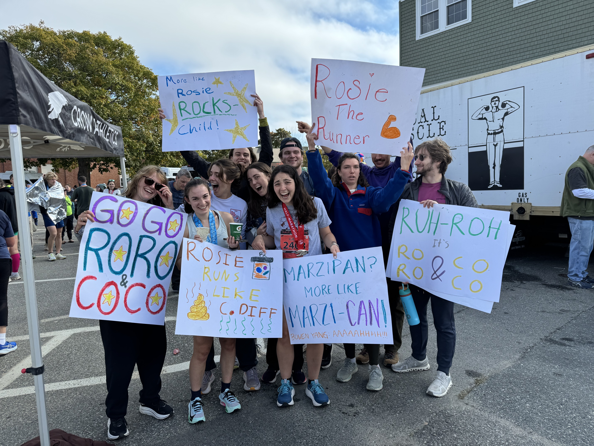
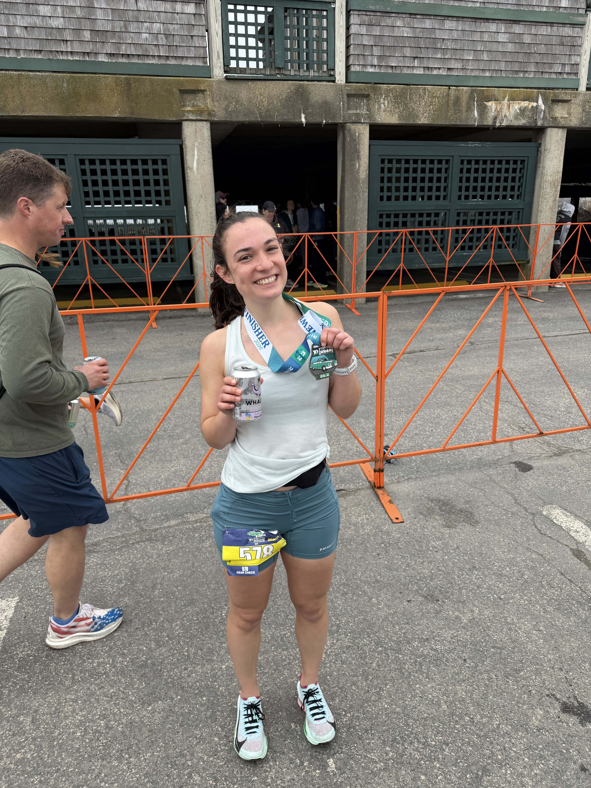
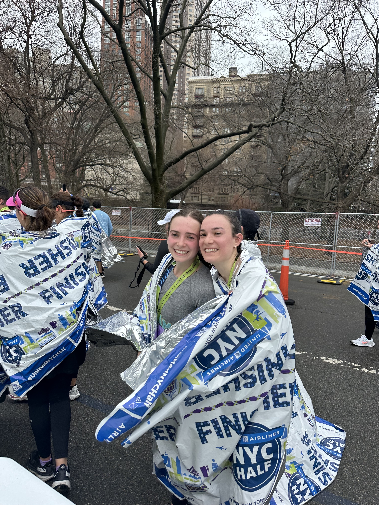
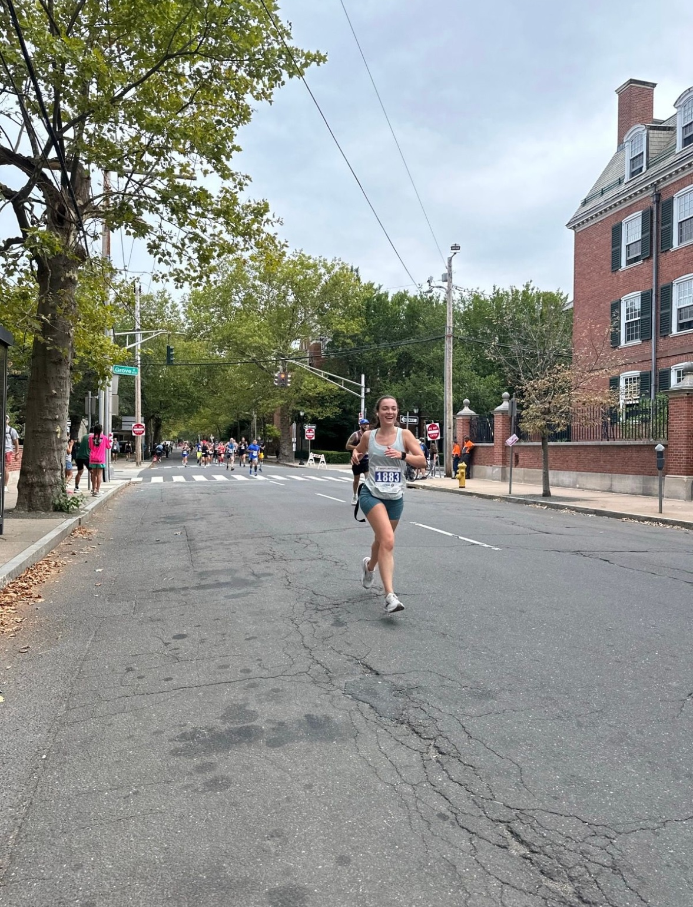
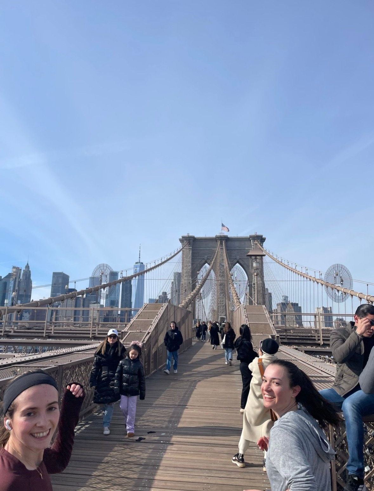

I've always loved being outside and being active, but growing up playing soccer and lacrosse in South Florida, running was what happened when you got in trouble. It was something I always wanted to do but could never truly turn into a habit or something consistent. I also didn't know it could be enjoyable until college.
Post-grad, I finally made my first longer-distance race happen, after six years of saying I was going to run a half marathon. I was really proud of myself, but when I finished, I never thought I'd be able to run double that distance. Somehow, six months later, I decided to run my first full marathon, in October 2025 in Acadia National Park, and it was something I really loved. That was one of my favorite days of my life, and I felt so supported and loved by the friends and family who made the trip to be there. It made me immediately sign up for another marathon later that year, wanting to see how much I could improve, and even enlisting my friend (shout-out to Coach Ian) to coach me along the way.



I ran Newport in April, and it felt amazing. Since then, I've had two more marathons on the calendar for this fall, including New York. I really love the feeling of challenging yourself and just seeing how strong your body is and how capable you are. I love how consistency builds up over time. It's really cool to feel my body get stronger every day, and to know I can really commit to something and be disciplined.
I also love the community and support. It's really cool to see everyone at a marathon pushing themselves to their own limits while being really supportive of each other, so I can't wait to do that this November in New York. It's so exciting to me to run my first Major in the city that's become home. Can't wait to be part of the party, hopefully with some of you.


